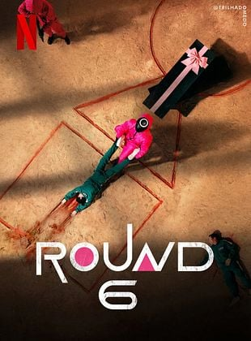

Bem-vindo ao universo de Round 6
*Esse site contém spoilers
Descubra os mistérios e desafios do jogo mais mortal já criado.
Trailer Oficial(2 temporada)
Sobre o round 6
Round 6 é uma série sul-coreana da Netflix que mistura tensão, crítica social e drama. Na história, pessoas endividadas aceitam participar de um jogo mortal com o sonho de mudar de vida. Cada fase é baseada em brincadeiras infantis, mas com uma consequência brutal: quem perde, morre. A série levanta questões sobre até onde alguém pode ir pela sobrevivência e virou um fenômeno mundial.